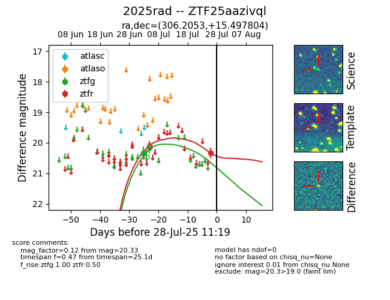

Target 2025rad at 2025-07-28 11:19, see:
FINK: fink-portal.org/2025rad
Lasair: lasair-ztf.lsst.ac.uk/objects/2025rad
ALeRCE: alerce.online/object/2025rad
TNS: wis-tns.org/object/2025rad
YSE: ziggy.ucolick.org/yse/transient_detail/2025rad
alt names
ZTF25aazivql (ztf,fink)
2025rad (tns,yse)
coordinates:
equatorial (ra, dec) = (306.2053,+15.49780)
galactic (l, b) = (57.8983,-12.59284)
photometry
last ztfg=20.16, ztfr=20.33
2 ztfg, 1 ztfr detections
